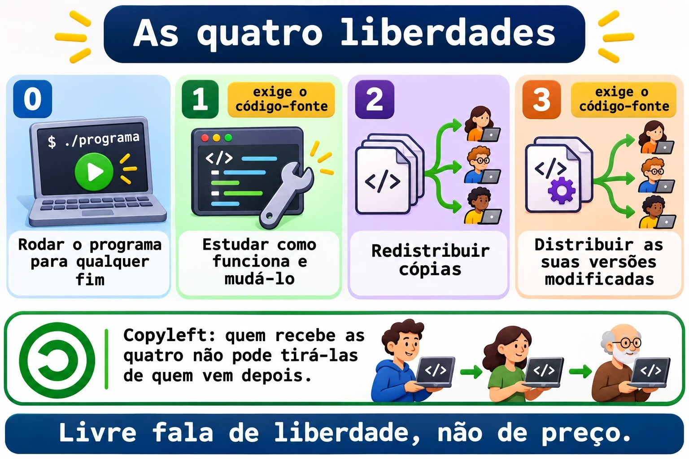
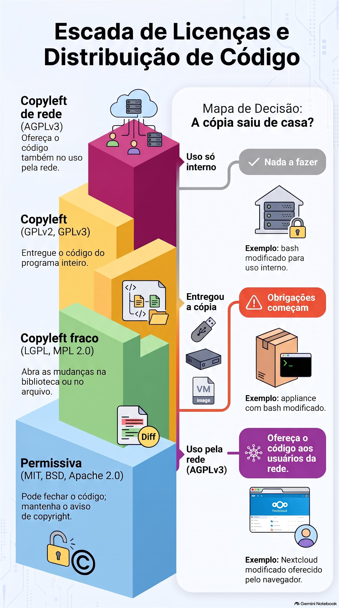
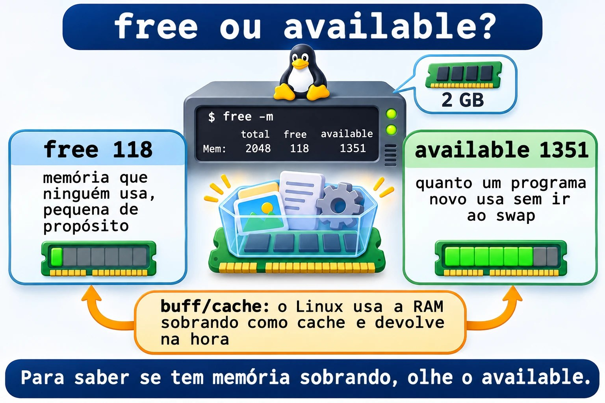
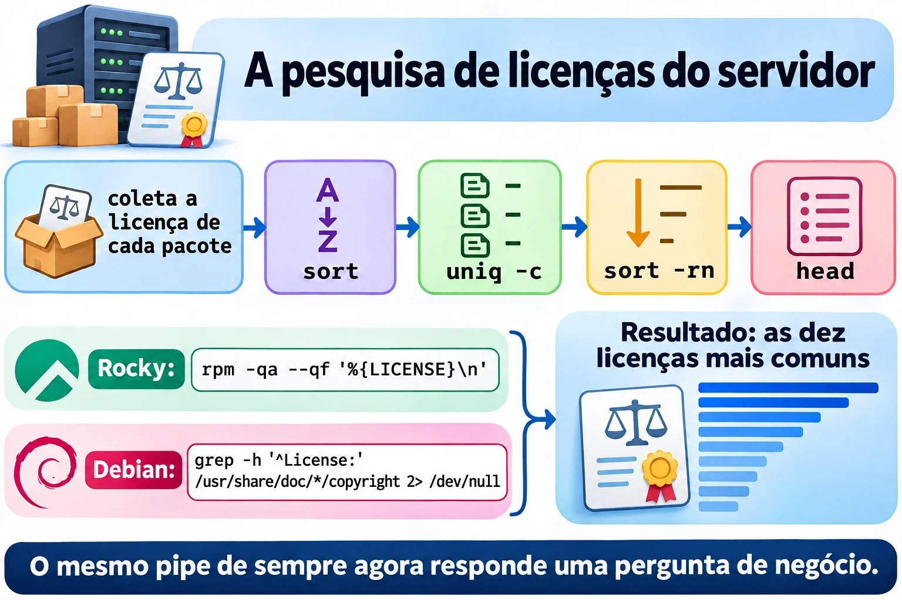
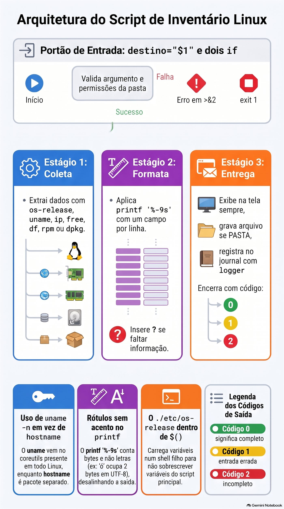
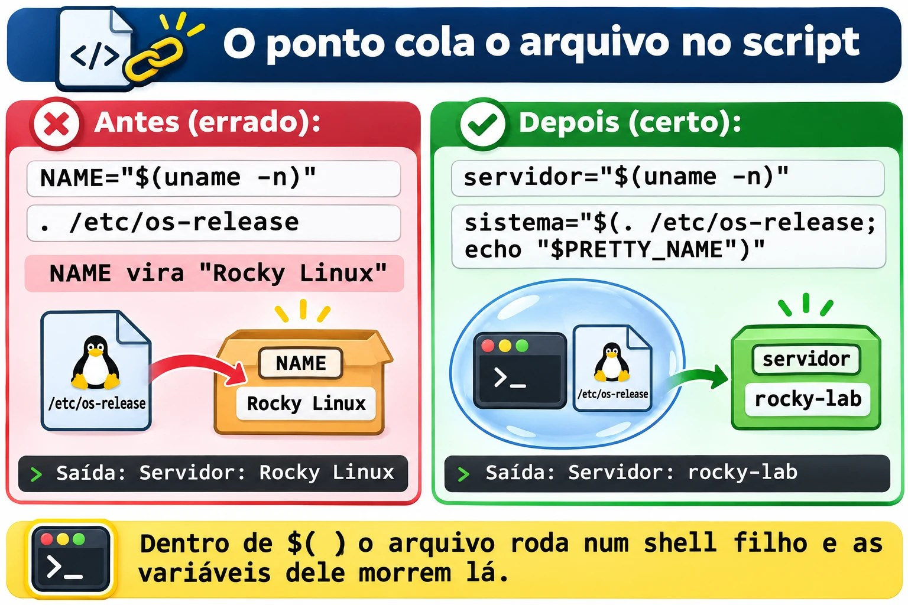

Aula 1.10 · Software livre na prática
Última aula do Módulo 1, e ela tem duas metades que se encontram no fim. Na primeira, você aprende a responder a pergunta que todo cliente faz um dia: "o que roda neste servidor, e a gente pode usar isso de graça?". Isso é licença, e licença é assunto de sysadmin, não só de advogado. Na segunda, você junta tudo o que viu desde a Aula 1.1 num script de verdade, o inventario.sh: a foto de um servidor, no mesmo formato no Rocky e no Debian, pronta para colar num chamado ou guardar numa pasta.
| Ficha | Aula 1.10 |
|---|---|
| Módulo | M1 · Linha de comando, aula 10 de 10, desafio do módulo |
| Quando | Semana 3 |
| Ao final você consegue | Explicar as quatro liberdades e a diferença entre licença permissiva e copyleft; dizer quando uma licença obriga a entregar o código; achar a licença de um pacote no Rocky e no Debian; reconhecer os principais programas livres de desktop e de servidor; dizer se um Linux roda em máquina física, VM ou contêiner; escrever, do zero, um script que coleta, formata e grava a foto de um servidor |
| Pré-requisitos | Aulas 1.1 a 1.9; o ~/bin no PATH nas duas VMs |
| Tempo | Cerca de 3h |
| Snapshots | m1a10-inicio e m1a10-fim nas duas VMs |
1 · Aquecimento
Três perguntas, de cabeça. Escreva as respostas; o Gabarito confere no fim.
- Na Aula 1.9,
grep -q root /etc/passwdterminou com código 0. Egrep -q naoexiste /etc/passwd? Por que esse número não é um erro? - Na Aula 1.9, qual é a diferença entre
wc -l /etc/passwdewc -l < /etc/passwd, e por que ela importa dentro de um script? - Palpite: sua empresa pega um programa GPL, muda o código e usa só dentro de casa, nos próprios servidores, sem entregar para ninguém. Ela é obrigada a publicar as mudanças?
2 · Por que importa
Em março de 2024, o Redis, um dos bancos em memória mais usados do mundo, trocou a licença BSD por duas licenças que não são de software livre. Em poucos dias, a Linux Foundation lançou o Valkey, uma cópia do código da última versão livre. Em agosto de 2023, o Terraform fez o mesmo movimento, e nasceu o OpenTofu. Em junho de 2023, a Red Hat passou a entregar o código-fonte do RHEL só para clientes, e o Rocky Linux, que você usa nesta aula, teve de mudar o jeito de montar a distribuição.
Nas três histórias, quem cuidava dos servidores precisou responder, em dias: "isso afeta a gente? Podemos continuar usando? Temos de trocar?". Quem sabia ler uma licença respondeu em uma hora. Quem não sabia ficou esperando o jurídico.
O Proxmox, que roda as suas VMs, é outro exemplo, mais tranquilo: é AGPLv3, de graça, e a empresa que o faz vive de assinaturas de suporte. Saber disso explica a mensagem "No valid subscription" que aparece ao entrar nele, e o que ela significa (não é um problema de licença).
A segunda metade da aula resolve outro pedido de todo dia: "me manda os dados desse servidor". Quanto de RAM, quanto de disco livre, que sistema, que IP, se é VM. Você já sabe achar cada informação. Hoje você para de digitar oito comandos e passa a rodar um.
3 · Modelo mental
Licença é a regra para quem passa adiante. Enquanto o software fica com você, quase tudo é permitido. As obrigações começam no dia em que você entrega uma cópia, ou, na AGPL, no dia em que outras pessoas usam o programa pela rede.
Quatro famílias, da mais solta para a mais exigente:
| Família | Exemplos | Se você modificar e entregar uma cópia | Se você usar só dentro de casa |
|---|---|---|---|
| Permissiva | MIT, BSD, Apache 2.0 | Pode fechar o código; mantenha o aviso de copyright | Nada a fazer |
| Copyleft fraco | LGPL, MPL 2.0 | Abra as mudanças na biblioteca ou no arquivo; o seu programa que só usa pode ser fechado | Nada a fazer |
| Copyleft | GPLv2, GPLv3 | Entregue o código do programa inteiro, sob a mesma licença | Nada a fazer |
| Copyleft de rede | AGPLv3 | Igual à GPL | Se outras pessoas usam a versão modificada pela rede, ofereça o código a elas |
E o inventário, a segunda metade:
Um inventário é uma foto: os mesmos campos, na mesma ordem, no mesmo formato, em qualquer servidor. Se a foto do Rocky e a do Debian não puderem ser comparadas linha a linha, ela não serve.
coleta formata entrega
┌──────────────┐ ┌───────────────┐ ┌──────────────────┐
│ os-release │ │ printf '%-9s' │ │ tela (sempre) │
│ uname, ip │ ─────► │ um campo por │ ────► │ arquivo se PASTA │
│ free, df │ │ linha │ │ journal (logger) │
│ rpm ou dpkg │ │ "?" se faltou │ │ código 0, 1 ou 2 │
└──────────────┘ └───────────────┘ └──────────────────┘4 · Conceito em camadas
Essencial
De onde vem o software livre. Em 1983, Richard Stallman anunciou o projeto GNU, para escrever um sistema operacional inteiro que todo mundo pudesse usar, estudar e compartilhar. Em 1985 criou a FSF, a Free Software Foundation, e depois a GPL, a licença que protege essa ideia. Em 1991, Linus Torvalds juntou ao GNU o que faltava, o kernel. Por isso parte da comunidade diz "GNU/Linux": o bash, o ls e o grep que você usa desde a Aula 1.1 são do GNU.
As quatro liberdades, numeradas a partir do zero, como bom programador:
| Liberdade | O que garante | Exige |
|---|---|---|
| 0 | Rodar o programa para qualquer fim | |
| 1 | Estudar como funciona e mudá-lo | Acesso ao código-fonte |
| 2 | Redistribuir cópias | |
| 3 | Distribuir as suas versões modificadas | Acesso ao código-fonte |
"Livre" fala de liberdade, não de preço. A frase clássica é free as in free speech, not as in free beer. Um software livre pode ser vendido, e um programa grátis pode ser fechado.
Open source. Em 1998, um grupo criou a OSI, a Open Source Initiative, com outro discurso: menos ética, mais vantagem prática, código aberto como forma melhor de desenvolver. As licenças aprovadas pelas duas organizações são quase as mesmas. No dia a dia, você vai ver as siglas FOSS (Free and Open Source Software) e FLOSS (Free/Libre and Open Source Software), que juntam as duas visões.
Copyleft é o truque jurídico da GPL: usar o direito autoral para garantir que as cópias, e as versões modificadas, continuem livres. Quem recebe um programa GPL recebe as quatro liberdades e não pode tirá-las de quem vem depois.


As licenças do seu servidor. Você não precisa decorar todas; precisa reconhecer as famílias.
| --- | --- | --- |
| Kernel Linux | GPLv2, só a versão 2 | Copyleft |
| bash, coreutils, grep, tar | GPLv3 ou posterior | Copyleft |
| glibc, systemd | LGPL 2.1 ou posterior, na maior parte | Copyleft fraco |
| Firefox, Thunderbird, LibreOffice | MPL 2.0 | Copyleft fraco |
| Proxmox VE, Nextcloud | AGPLv3 | Copyleft de rede |
| Apache httpd, Kubernetes | Apache 2.0 | Permissiva |
| nginx, OpenSSH | BSD | Permissiva |
| PostgreSQL | PostgreSQL License, parecida com a MIT | Permissiva |
| MariaDB | GPLv2 | Copyleft |
| Samba, Ansible | GPLv3 | Copyleft |
| Python | PSF License | Permissiva |
Os programas livres que você precisa reconhecer.
| Área | Programas |
|---|---|
| Escritório | LibreOffice: Writer (texto), Calc (planilha), Impress (apresentação), Draw, Base, Math |
| Internet | Firefox, Thunderbird |
| Imagem, vídeo e som | GIMP (foto), Inkscape (vetor), Blender (3D), Audacity (áudio), VLC (vídeo) |
| Servidores | Apache httpd e nginx (web), MariaDB, MySQL e PostgreSQL (bancos), Samba (pastas para Windows), NFS (pastas entre Linux), Postfix e Dovecot (e-mail), OpenLDAP (diretório) |
| Linguagens | C, Java, JavaScript, Perl, PHP, Python, shell |
| Pacotes | dpkg e apt no Debian; rpm e dnf no Rocky |
Achar a licença de um pacote. Cada família guarda num lugar.
# Rocky: o rpm guarda a licença no próprio pacote
rpm -qi bash | grep -i '^License'
rpm -q --qf '%{NAME}: %{LICENSE}\n' bash openssh-server systemd
# Debian: cada pacote traz um arquivo copyright
less /usr/share/doc/bash/copyright
grep -m3 '^License:' /usr/share/doc/openssh-server/copyrightNo Rocky 9, o campo vem no formato antigo, como GPLv3+. Distribuições mais novas, como o Rocky 10 e o Fedora, estão migrando para o formato SPDX, como GPL-3.0-or-later. É a mesma licença com outro nome. No Debian, os arquivos mais novos seguem um formato que o computador lê, com linhas License:. Os mais antigos são texto livre: se o grep não achar nada, leia o começo do arquivo.
Intermediário
Como alguém ganha dinheiro com software livre. O mercado em que você trabalha depende disso.
| Modelo | Como funciona | Exemplos |
|---|---|---|
| Assinatura e suporte | O software é livre; a empresa vende atualizações testadas, certificação e alguém para ligar às 3h | Red Hat, SUSE, Canonical, Proxmox |
| Open core | O núcleo é livre; os recursos para empresas são pagos e fechados | GitLab (CE é MIT; EE é fechado) |
| Licença dupla | O mesmo código sai em GPL, de graça, ou numa licença comercial, para quem não quer abrir o próprio código | MySQL, Qt |
| Serviço na nuvem | A empresa roda o software para você e cobra pelo uso | Bancos gerenciados, Nextcloud hospedado |
| Consultoria e treinamento | O dinheiro vem do conhecimento, não do código | Integradores e consultorias locais |
| Fundações | Empresas que usam o software pagam uma fundação neutra para mantê-lo | Linux Foundation, Apache Software Foundation |
Creative Commons é para conteúdo, não para código: textos, imagens, vídeos, cursos. As peças se combinam.
| Sigla | Significa |
|---|---|
| BY | Cite o autor |
| SA | Compartilhe pela mesma licença (o copyleft do conteúdo) |
| NC | Uso não comercial |
| ND | Sem obras derivadas: não pode modificar |
| CC0 | Domínio público: nenhuma condição |
Exemplo: a Wikipédia usa CC BY-SA. Você pode copiar um artigo para o seu manual interno, citando a fonte e mantendo a mesma licença.
Quando o código é visível, mas não é livre. Algumas empresas passaram a usar licenças source-available: você lê o código, mas não pode, por exemplo, oferecê-lo como serviço concorrente. A SSPL, criada pelo MongoDB em 2018, é a mais conhecida. A OSI não reconhece essas licenças como open source. Foi para a SSPL, e para uma licença própria, que o Redis foi em 2024; no Redis 8, em 2025, ele voltou a oferecer também a AGPLv3. O Terraform foi para a BSL, que libera o uso em produção, mas proíbe concorrer com a HashiCorp.
Nuvem e virtualização.
| Sigla | Você recebe | Você cuida | Exemplo |
|---|---|---|---|
| IaaS | Máquina virtual, disco e rede | Do sistema operacional para cima | Uma VM numa nuvem pública |
| PaaS | Ambiente pronto para a aplicação | Só do código e dos dados | Um banco gerenciado |
| SaaS | O programa pronto, pelo navegador | Só dos seus dados e usuários | Webmail, CRM online |
Duas formas de dividir uma máquina:
- Hipervisor (KVM, o do Proxmox; VMware; Hyper-V): cada VM tem o próprio kernel. Isolamento forte, mais memória gasta.
- Contêiner (LXC, também no Proxmox; Docker; Podman): todos dividem o kernel do hospedeiro. Leve e rápido, isolamento menor.
O Linux diz onde está rodando:
systemd-detect-virt # kvm numa VM do Proxmox; lxc num CT; none numa máquina física
cat /sys/class/dmi/id/sys_vendor # QEMU numa VM do ProxmoxNuma máquina física, systemd-detect-virt mostra none e termina com código 1. Guarde isso para o script.
Senhas e privacidade. O básico: senha longa vale mais que senha "complicada" e curta; uma senha por serviço, guardada num gerenciador de senhas; MFA, o segundo fator, em tudo o que for importante; HTTPS cifra o caminho, não garante que o site é honesto; e o navegador guarda cookies e histórico, que o modo privado não leva para a próxima sessão, mas o seu provedor e o site continuam vendo.
Ponte Windows
| No Windows | No Linux |
|---|---|
winver, systeminfo | cat /etc/os-release, uname -r |
| "Sobre" mostra "Máquina virtual" | systemd-detect-virt |
| Programas e Recursos: lista de instalados | rpm -qa no Rocky, dpkg -l no Debian |
| Licença no "Sobre" de cada programa | rpm -qi PACOTE, /usr/share/doc/PACOTE/copyright |
Script de inventário em PowerShell com Get-ComputerInfo | inventario.sh, que você escreve hoje |
| Licença por usuário ou por núcleo, auditoria da Microsoft | O kernel e quase todo o sistema não cobram licença; você paga, se quiser, o suporte |
Avançado
GPLv2 contra GPLv3. A GPLv3, de 2007, acrescentou duas coisas: proteção contra patentes e a regra "anti-tivoização", que proíbe vender um aparelho que roda GPLv3 e impede o dono de instalar uma versão modificada. O kernel ficou na GPLv2 "somente", sem o "ou posterior", e por isso nunca pode passar para a v3. É também por isso que algumas empresas evitam componentes GPLv3 em aparelhos fechados.
"Distribuir" é a palavra-chave. Rodar no seu servidor não é distribuir. Entregar um pendrive, um appliance ou uma imagem de VM ao cliente é. Uma empresa que modifica o bash para uso interno não deve nada a ninguém. Uma empresa que vende um appliance com esse bash modificado deve entregar o código ao comprador, se ele pedir. A AGPL fecha o buraco do serviço na nuvem: se você modifica o Nextcloud e oferece aos clientes pela rede, eles têm direito ao código da sua versão.
O caso RHEL. O RHEL é feito de pacotes GPL, entre outros. A Red Hat continua cumprindo a GPL ao entregar o código para quem recebe o binário, os clientes. O que mudou em 2023 foi o acesso público, que passou a ser o CentOS Stream, um passo à frente do RHEL. O Rocky, o AlmaLinux e outros passaram a montar a distribuição a partir do CentOS Stream e de outras fontes. Para você, na VM, nada mudou: dnf update continua funcionando.


5 · Rocky × Debian
| Rocky Linux 9 e 10 | Debian 13 | |
|---|---|---|
| Arquivo que identifica a família | /etc/redhat-release e /etc/rocky-release | /etc/debian_version |
/etc/os-release, campo ID | rocky | debian |
/etc/os-release, campo ID_LIKE | rhel centos fedora | Não existe: o Debian é a origem |
| Licença de um pacote | rpm -qi PACOTE, campo License | /usr/share/doc/PACOTE/copyright |
| Contar pacotes instalados | rpm -qa | wc -l | dpkg -l | grep -c '^ii' |
| Nome da placa de rede numa VM do Proxmox | Depende do modelo da VM: no lab, enp6s18; em outras, ens18 ou eth0 | Igual: enp6s18 no lab |
| Kernel | Antigo e com correções trazidas de versões novas, como o 5.14 no Rocky 9 | Mais novo, como o 6.12 no Debian 13 |
systemd-detect-virt | Instalado | Instalado |
A regra que serve nas duas: leia o /etc/os-release para saber o sistema, e o /etc/debian_version ou o /etc/redhat-release só para escolher o gerenciador de pacotes.
Por que grep -c '^ii' no Debian, e não wc -l? Porque o dpkg -l mostra cinco linhas de cabeçalho e também os pacotes removidos que deixaram configuração, com rc no começo. Só ii significa "instalado".
6 · Lab guiado
Faça tudo nas duas VMs, a não ser quando o passo disser só uma. Os testes ficam em ~/lab14; o script pronto vai para ~/bin; as fotos dos servidores vão para ~/inventarios. Em cada passo, quando aparecer Preveja, escreva a resposta antes de apertar Enter.
Passo 1 · Preparar e perguntar "quem é você?"
No nó Proxmox:
qm snapshot 201 m1a10-inicio
qm snapshot 202 m1a10-inicioEm cada VM:
mkdir -p ~/lab14 ~/inventarios
cd ~/lab14
cat /etc/os-releasePreveja. O Rocky mostra ID_LIKE="rhel centos fedora". O que o Debian mostra na linha ID_LIKE?
Nada: a linha não existe. O ID_LIKE diz "sou parecido com", e o Debian é a origem da família, não um parente. O Ubuntu, que vem do Debian, mostra ID_LIKE=debian.
O arquivo é uma lista de NOME=valor, exatamente o formato de uma variável do shell. Por isso dá para carregá-lo:
( . /etc/os-release; echo "$ID | $VERSION_ID | $PRETTY_NAME" )Rocky: algo como rocky | 9.6 | Rocky Linux 9.6 (Blue Onyx). Debian: debian | 13 | Debian GNU/Linux 13 (trixie). Os parênteses abrem um shell filho: as variáveis do arquivo morrem com ele e não sujam o seu terminal. Guarde esse detalhe para a Quebra A.
Compare com os arquivos de cada família:
cat /etc/redhat-release 2> /dev/null
cat /etc/debian_version 2> /dev/null
uname -n
uname -rDecida 1 · A fonte do nome do sistema. O seu script vai rodar no Rocky, no Debian e, um dia, num Ubuntu ou num AlmaLinux. De onde ele deve tirar o nome do sistema?
- A) De
/etc/redhat-release. - B) Do
PRETTY_NAMEde/etc/os-release. - C) De
uname -a. - D) Da primeira linha de
/etc/issue.
Escolha a letra antes de olhar a tabela.
| Se você marcou | Resultado | Por quê |
|---|---|---|
| A | ❌ Errada | Só existe na família Red Hat. No Debian, o script quebra na primeira linha. |
| B | ✅ Certa | O /etc/os-release é padrão do systemd e existe em praticamente toda distribuição atual, no mesmo formato. O PRETTY_NAME já vem pronto para mostrar. |
| C | ❌ Errada | O uname fala do kernel, não da distribuição. Linux rocky-lab 5.14.0-... não diz que é Rocky. |
| D | ❌ Errada | O /etc/issue é a mensagem da tela de login. O administrador pode mudá-la, e ela traz códigos como \n e \l. |
Para fixar: para saber qual sistema, /etc/os-release. Para saber qual gerenciador de pacotes, a existência de /etc/debian_version ou /etc/redhat-release.
Passo 2 · Onde estou rodando?
systemd-detect-virt; echo "rc=$?"
cat /sys/class/dmi/id/sys_vendor
cat /sys/class/dmi/id/product_namekvm e rc=0; QEMU; e algo como Standard PC (Q35 + ICH9, 2009). O Proxmox usa o KVM no kernel e o QEMU para fingir o hardware. Num contêiner LXC do Proxmox, o primeiro comando mostraria lxc.
Decida 2 · E numa máquina física? O mesmo script roda num servidor de verdade, sem virtualização. O que acontece com virt="$(systemd-detect-virt)"?
- A)
virtfica vazia e o código é 0. - B)
virtvalenonee o código é 1. - C)
virtvalephysicale o código é 0. - D) O comando dá erro, porque só funciona em VM.
Escolha a letra antes de olhar a tabela.
| Se você marcou | Resultado | Por quê |
|---|---|---|
| A | ❌ Errada | Ele sempre escreve uma resposta. Vazia, só se o comando nem existir. |
| B | ✅ Certa | Escreve none e termina com 1. Por isso o script testa o texto, [ "$virt" = "none" ], e não o código: aqui, 1 não é erro, é "não estou numa VM". |
| C | ❌ Errada | Não existe a resposta physical. |
| D | ❌ Errada | Funciona em qualquer máquina com systemd; ele existe justamente para responder "física ou virtual?". |
Para fixar: é o mesmo caso do grep na Aula 1.9. Antes de tratar um código diferente de zero como erro, leia o man do comando: man systemd-detect-virt, seção EXIT STATUS.
Passo 3 · Memória, disco e rede
free -m
free -h
df -h /
df -h --output=avail,size,pcent /
ip -br -4 addr show scope global
uptime -pO --output do df escolhe as colunas e a ordem. O ip -br é o modo resumido, uma placa por linha; -4 mostra só IPv4; scope global deixa de fora a lo, o 127.0.0.1. O uptime -p diz há quanto tempo a máquina está ligada, em texto.
Preveja. Na saída do free -m, qual número é maior: a coluna free ou a available?
A available, quase sempre, e com folga. Algo como free 118 e available 1351.
Decida 3 · A RAM está acabando? Um colega olha o free -m de um servidor de 2 GB, vê free 118 e abre um chamado urgente: "memória acabando, precisamos de mais RAM". O que você responde?
- A) Ele tem razão: 118 MB livres é pouco, precisa de mais memória.
- B) Peça para ele rodar
sync; echo 3 > /proc/sys/vm/drop_cachespara liberar a memória. - C) Olhe a coluna
available. A diferença está nobuff/cache: o Linux usa a RAM sobrando como cache de disco e a devolve na hora em que um programa pede. - D) Olhe a linha
Swap: se ela estiver vazia, a memória está acabando.
Escolha a letra antes de olhar a tabela.
| Se você marcou | Resultado | Por quê |
|---|---|---|
| A | ❌ Errada | free é a memória que ninguém usa, nem o cache. Num Linux saudável, ela é pequena de propósito: RAM parada é RAM desperdiçada. |
| B | ❌ Errada | Esvazia o cache, o free sobe por alguns minutos, e o servidor fica mais lento, porque volta a ler do disco o que estava na memória. Não resolve nada. |
| C | ✅ Certa | available é a estimativa de quanto um programa novo consegue usar sem o sistema ir para o swap. É o número que vai para o inventário e para o alarme. |
| D | ❌ Errada | Swap vazio é bom sinal: ninguém precisou dele. O que preocupa é swap sendo usado e available baixo ao mesmo tempo. |
Para fixar: no free, o número que responde "tem memória sobrando?" é o available.


Passo 4 · De quem é esse software?
No Rocky:
rpm -qi bash | grep -i '^License'
rpm -q --qf '%{NAME}: %{LICENSE}\n' bash openssh-server systemd kernel
rpm -qa --qf '%{LICENSE}\n' | sort | uniq -c | sort -rn | headNo Debian:
grep -m3 '^License:' /usr/share/doc/openssh-server/copyright
grep -h '^License:' /usr/share/doc/*/copyright 2> /dev/null | sort | uniq -c | sort -rn | headO último comando de cada lado é a "pesquisa de licenças" do servidor inteiro: conta quantos pacotes usam cada licença e mostra as dez mais comuns. É a mesma linha de sort | uniq -c | sort -rn da Aula 1.6, agora respondendo uma pergunta de negócio. Espere ver GPL, LGPL, MIT e BSD no topo, nas duas.
Agora um laço da Aula 1.9, no Rocky:
for p in bash openssh-server systemd nginx; do
if rpm -q "$p" > /dev/null; then
rpm -q --qf '%{NAME}: %{LICENSE}\n' "$p"
else
echo "$p: não instalado"
fi
doneE no Debian:
for p in bash openssh-server systemd nginx; do
if [ -f "/usr/share/doc/$p/copyright" ]; then
echo "$p: $(grep -m1 '^License:' "/usr/share/doc/$p/copyright")"
else
echo "$p: não instalado"
fi
doneNo Debian, alguns pacotes respondem bash: com a licença vazia. Não é erro do laço: o copyright desse pacote é texto livre, sem linha License:. Leia com less.
Decida 4 · Quando é preciso entregar o código? Em qual destes casos a licença obriga a entregar o código-fonte a alguém?
- A) Você modifica o nginx, BSD, e roda a versão modificada no servidor da sua empresa, que atende o site do cliente.
- B) Você modifica uma ferramenta GPL, instala nas VMs de um cliente e entrega as VMs a ele, que passa a ser o dono delas.
- C) Você modifica o
bashpara uso nos servidores internos da sua empresa. - D) Você vende um appliance com um programa Apache 2.0, sem modificar.
Escolha a letra antes de olhar a tabela.
| Se você marcou | Resultado | Por quê |
|---|---|---|
| A | ❌ Errada | Licença permissiva não obriga a abrir nada, e o software nem saiu da sua empresa. |
| B | ✅ Certa | Entregar as VMs é distribuir. O cliente recebe o binário GPL modificado, e com ele o direito ao código da sua versão, sob a mesma licença. |
| C | ❌ Errada | É GPL, mas não houve distribuição: o bash modificado não saiu de casa. |
| D | ❌ Errada | Houve distribuição, mas a Apache 2.0 é permissiva. Você precisa incluir a licença e o arquivo NOTICE, não o código. |
Para fixar: a pergunta-chave da GPL é "a cópia saiu de casa?". Se não saiu, quase nenhuma obrigação existe.
Decida 5 · E a AGPL? A sua empresa modifica o Nextcloud, AGPLv3, para incluir a marca e um recurso novo, e oferece aos clientes pelo navegador. Ninguém recebe uma cópia do programa. O que a licença exige?
- A) Nada: não houve distribuição, então vale a mesma regra do uso interno.
- B) Oferecer o código da versão modificada a quem usa o serviço pela rede.
- C) Publicar o código para qualquer pessoa do mundo, no GitHub, por exemplo.
- D) Pagar uma licença comercial à empresa do Nextcloud.
Escolha a letra antes de olhar a tabela.
| Se você marcou | Resultado | Por quê |
|---|---|---|
| A | ❌ Errada | Seria verdade na GPL. A AGPL existe exatamente para fechar esse buraco: uso pela rede conta. |
| B | ✅ Certa | Quem interage com o programa modificado pela rede tem direito ao código dessa versão. Um link "código-fonte" no rodapé resolve. |
| C | ❌ Errada | A obrigação é com os usuários do serviço, não com o mundo. Muita gente publica para todos por ser mais simples, mas a licença não exige. |
| D | ❌ Errada | A AGPL não cobra nada. Pagar a empresa é uma escolha, para ter suporte ou a edição empresarial. |
Para fixar: GPL olha para quem recebe uma cópia; AGPL olha também para quem usa pela rede.


Passo 5 · O desafio, antes da solução
Agora é com você. Tente sozinho por 30 minutos antes de abrir o Passo 6. Travar faz parte; é travando que a Aula 1.9 vira sua. Escreva em ~/lab14/inventario.sh um script que:
- Aceite um argumento opcional,
PASTA. Sem ele, só mostra na tela. Com ele, também gravaPASTA/SERVIDOR-AAAA-MM-DD.txt. - Se
PASTAnão for uma pasta, ou não der para escrever nela, mostre o erro em>&2e termine com código 1. - Mostre, nesta ordem, um campo por linha, com os rótulos alinhados: servidor e data num título; sistema; kernel; virtualização; IPs; RAM total e disponível em MB; disco da raiz livre, total e uso; pacotes instalados; há quanto tempo está ligado.
- Funcione igual no Rocky e no Debian: mesmos rótulos, mesma ordem.
- Se algum campo não puder ser descoberto, mostre
?no lugar, continue, e termine com código 2 e um aviso em>&2. - Deixe uma linha no journal com
logger -t inventario.
Três dicas, se precisar:
- Carregue o
/etc/os-releasedentro de$( ). - Para pegar colunas de uma linha, use
read -r a b c < arquivo, como nowhile readda Aula 1.9, e nãocomando | read. printf '%-9s %s\n' "Kernel:" "$kernel"alinha o rótulo em 9 posições.
Passo 6 · Uma solução, bloco por bloco
Compare com a sua. Não precisa ser igual: precisa passar nos testes do Passo 7.
cat > ~/lab14/inventario.sh <<'EOF'
#!/bin/bash
# inventario.sh - foto de um servidor Linux, no mesmo formato em qualquer distro
# Uso: inventario.sh [PASTA]
# Sem PASTA, só mostra na tela. Com PASTA, também grava PASTA/SERVIDOR-DATA.txt
# Saída: 0 = tudo coletado; 1 = PASTA inválida; 2 = algum campo ficou sem resposta
destino="$1"
if [ -n "$destino" ] && [ ! -d "$destino" ]; then
echo "ERRO: $destino não é uma pasta" >&2
exit 1
fi
if [ -n "$destino" ] && [ ! -w "$destino" ]; then
echo "ERRO: sem permissão de escrita em $destino" >&2
exit 1
fi
faltou=0
tmp="$(mktemp)"
servidor="$(uname -n)"
agora="$(date '+%F %H:%M')"
# Sistema: o /etc/os-release existe nas duas famílias.
# Lido dentro de $( ), para as variáveis dele não se misturarem com as do script.
if [ -r /etc/os-release ]; then
sistema="$(. /etc/os-release; echo "$PRETTY_NAME")"
else
sistema="?"
faltou=$((faltou + 1))
fi
kernel="$(uname -r)"
# Virtualização: numa máquina física, mostra "none" e sai com 1
virt="$(systemd-detect-virt 2> /dev/null)"
if [ "$virt" = "none" ]; then
virt="nenhuma, máquina física"
elif [ -z "$virt" ]; then
virt="?"
faltou=$((faltou + 1))
fi
# IPs: uma linha por placa; com scope global, a lo fica de fora
ip -br -4 addr show scope global > "$tmp"
ips=""
while read -r placa estado endereco resto; do
[ -n "$endereco" ] || continue
if [ -z "$ips" ]; then
ips="$placa $endereco"
else
ips="$ips, $placa $endereco"
fi
done < "$tmp"
if [ -z "$ips" ]; then
ips="?"
faltou=$((faltou + 1))
fi
# Memória em MB: o total e o disponível, que é o que importa
free -m | grep '^Mem:' > "$tmp"
read -r rotulo mem_total usado livre compart cache mem_disp < "$tmp"
# Disco da raiz
df -h --output=avail,size,pcent / | tail -n 1 > "$tmp"
read -r disco_livre disco_total disco_uso < "$tmp"
# Pacotes: cada família tem o seu gerenciador
if [ -f /etc/debian_version ]; then
pacotes="$(dpkg -l | grep -c '^ii') (dpkg)"
elif [ -f /etc/redhat-release ]; then
pacotes="$(rpm -qa | wc -l) (rpm)"
else
pacotes="?"
faltou=$((faltou + 1))
fi
ligado="$(uptime -p)"
rm -f "$tmp"
saida=/dev/null
if [ -n "$destino" ]; then
saida="$destino/$servidor-$(date +%F).txt"
fi
{
echo "=== $servidor · $agora ==="
printf '%-9s %s\n' "Sistema:" "$sistema"
printf '%-9s %s\n' "Kernel:" "$kernel"
printf '%-9s %s\n' "Virtual:" "$virt"
printf '%-9s %s\n' "IP:" "$ips"
printf '%-9s %s MB, %s MB disponíveis\n' "RAM:" "$mem_total" "$mem_disp"
printf '%-9s %s livres de %s, %s usado\n' "Disco /:" "$disco_livre" "$disco_total" "$disco_uso"
printf '%-9s %s\n' "Pacotes:" "$pacotes"
printf '%-9s %s\n' "Ligado:" "$ligado"
} | tee "$saida"
if [ -n "$destino" ]; then
echo "Gravado em $saida" >&2
fi
logger -t inventario "$servidor: $faltou campo(s) sem resposta"
if [ "$faltou" -gt 0 ]; then
echo "AVISO: $faltou campo(s) sem resposta" >&2
exit 2
fi
EOF
chmod +x ~/lab14/inventario.sh
bash -n ~/lab14/inventario.sh && echo "sintaxe ok"O que cada bloco usa, e onde você viu:
| Bloco | O que faz | Aula |
|---|---|---|
destino="$1" e os dois if | Confere o que é barato antes de tudo: argumento, pasta, permissão. Erro em >&2 e exit 1 | 1.8 e 1.9 |
faltou=0 e $((faltou + 1)) | Conta os campos sem resposta, sem parar o script | 1.9 |
mktemp | Cria um arquivo temporário vazio, com nome único, em /tmp, e mostra o nome. Novo: no fim, o rm -f "$tmp" apaga | Hoje |
$(. /etc/os-release; echo ...) | Lê o arquivo num shell filho; só o PRETTY_NAME volta | Hoje, Passo 1 |
while read ... done < "$tmp" | Percorre as placas sem perder a variável ips | 1.9 |
read -r a b c ... < "$tmp" | Corta uma linha em colunas, pelos espaços | 1.9 |
[ -f /etc/debian_version ] | Escolhe o gerenciador de pacotes | Hoje, §5 |
saida=/dev/null e tee "$saida" | Mostra na tela sempre; grava só se houver PASTA. Sem PASTA, o tee escreve no "buraco negro" | 1.6 |
{ ...; } | tee | Junta a saída de vários comandos num fluxo só | 1.6 |
logger -t inventario | Uma linha no journal, para saber quando rodou | 1.9 |
exit 2 no fim | O cron, ou outro script, sabe que a foto saiu incompleta | 1.9 |
Três escolhas que parecem detalhe:
uname -n, e nãohostname. Ounamevem nocoreutils, que está em todo Linux. O comandohostnameé um pacote separado, que uma instalação mínima pode não ter.- Rótulos sem acento. O
printf '%-9s'conta bytes, não letras.Memória:tem 8 letras e 9 bytes, porque oóocupa 2 em UTF-8, e o alinhamento sai torto. DaíRAM:,Disco /:eVirtual:. - O
.dentro de$( ). O/etc/os-releasedefineNAME,ID,VERSIONe outras. Carregado direto no script, ele sobrescreve qualquer variável sua com o mesmo nome. A Quebra A mostra o estrago.


Passo 7 · Testar os caminhos e comparar as duas VMs
Primeiro, o caminho feliz e o de entrada errada:
cd ~/lab14
./inventario.sh; echo "rc=$?"
./inventario.sh ~/inventarios; echo "rc=$?"
ls ~/inventarios
./inventario.sh /naoexiste; echo "rc=$?"
./inventario.sh /etc; echo "rc=$?"No Rocky, a primeira chamada mostra algo assim (os números e o nome da placa serão os da sua VM):
=== rocky-lab · 2026-11-02 16:14 ===
Sistema: Rocky Linux 9.6 (Blue Onyx)
Kernel: 5.14.0-570.17.1.el9_6.x86_64
Virtual: kvm
IP: enp6s18 10.1.0.51/24
RAM: 1763 MB, 1351 MB disponíveis
Disco /: 14G livres de 20G, 30% usado
Pacotes: 412 (rpm)
Ligado: up 3 hours, 12 minutes
rc=0A segunda chamada mostra o mesmo, mais Gravado em /home/student/inventarios/rocky-lab-2026-11-02.txt, e rc=0. A terceira, ERRO: /naoexiste não é uma pasta e rc=1. A quarta, ERRO: sem permissão de escrita em /etc e rc=1.
Agora o caminho do meio: um campo que não responde. Você vai enganar o script com um ip falso, que não mostra nada, posto na frente do PATH só para esta linha:
mkdir -p ~/lab14/falso
printf '#!/bin/bash\nexit 0\n' > ~/lab14/falso/ip
chmod +x ~/lab14/falso/ip
PATH=~/lab14/falso:$PATH ./inventario.sh; echo "rc=$?"Preveja a linha IP: e o código.
IP: ?, depois AVISO: 1 campo(s) sem resposta e rc=2. O resto da foto saiu normal: um campo faltando não derruba os outros.
O journal registrou cada execução:
journalctl -t inventario --since todaySe não aparecer nada no Debian, use sudo journalctl -t inventario --since today: dependendo dos grupos do usuário, ele só vê parte do journal.
Agora, a prova de que a foto é a mesma nas duas. Rode em cada VM:
./inventario.sh | tail -n +2 | cut -d: -f1
./inventario.sh | tail -n +2 | cut -d: -f1 | md5sumO tail -n +2 pula o título, que tem o nome do servidor; o cut fica só com os rótulos; o md5sum resume a lista numa "impressão digital". Se a impressão do Rocky e a do Debian forem iguais, os rótulos são idênticos, na mesma ordem: mesmo formato. Basta comparar os primeiros caracteres das duas.
Preveja. Se você trocar, só no script do Debian, "Disco /:" por "Disco:", as impressões continuam iguais?
Não. Um caractere diferente muda o md5sum inteiro. É por isso que ele serve para comparar: ou é igual, ou não é.
Tudo certo? Instale nas duas VMs:
cp ~/lab14/inventario.sh ~/bin/
type inventario.shAgora o ganho: no PowerShell do Windows, com os apelidos da Aula 0.2, tire a foto das duas sem entrar em nenhuma:
ssh rocky-lab bin/inventario.sh
ssh debian-lab bin/inventario.shCada linha entra, roda um comando e sai, como o ssh debian-lab hostname da Aula 0.2. O caminho bin/inventario.sh é relativo à pasta pessoal, onde o ssh começa, e funciona mesmo que o ~/bin não esteja no PATH de uma sessão sem terminal.
Protocolo · Script que roda em qualquer distro
- Sistema pelo
/etc/os-release, carregado dentro de$( ). Família, só para escolherrpmoudpkg, pelo/etc/debian_versionou/etc/redhat-release.- Prefira comandos que existem em todo lugar:
uname,ip,free,df,systemd-detect-virt. Quando não existir um comum, escolha por família comif.- Um campo que não responde vira
?, conta nofaltoue não para o script.- Saída de máquina, com rótulos fixos, sem acento, alinhados com
printf.- Códigos de saída documentados no topo: 0 completo, 1 entrada errada, 2 incompleto.
- Teste nas duas famílias e compare os rótulos, com
cutemd5sum, antes de confiar.
7 · Quebre e conserte
Quebra A · O servidor que mudou de nome
Um colega escreveu uma ficha rápida do servidor. Faça como ele, nas duas VMs:
cd ~/lab14
cat > ficha.sh <<'EOF'
#!/bin/bash
# ficha.sh - nome do servidor e sistema (versão do colega)
NAME="$(uname -n)"
. /etc/os-release
echo "Servidor: $NAME"
echo "Sistema: $PRETTY_NAME"
EOF
chmod +x ficha.shObserve.
./ficha.shNo Rocky: Servidor: Rocky Linux. No Debian: Servidor: Debian GNU/Linux. O nome do servidor sumiu. Num inventário de 40 máquinas, todas teriam o mesmo "nome".
Diagnostique.
bash -x ./ficha.sh++ uname -n
+ NAME=rocky-lab
+ . /etc/os-release
++ NAME='Rocky Linux'
++ VERSION='9.6 (Blue Onyx)'
++ ID=rocky
...
+ echo 'Servidor: Rocky Linux'O NAME recebeu rocky-lab, certo. Duas linhas depois, o . executou o /etc/os-release dentro do script, e a primeira linha dele é NAME="Rocky Linux". As linhas com ++ são as do arquivo carregado. A variável do colega foi atropelada por outra com o mesmo nome.
Decida A · O conserto. O que resolve de verdade?
- A) Usar aspas simples:
NAME='$(uname -n)'. - B) Exportar a variável antes:
export NAME="$(uname -n)". - C) Carregar o arquivo num shell filho,
sistema="$(. /etc/os-release; echo "$PRETTY_NAME")", e usar nomes minúsculos nas suas variáveis. - D) Trocar o
.porsource.
Escolha a letra antes de olhar a tabela.
| Se você marcou | Resultado | Por quê |
|---|---|---|
| A | ❌ Errada | O . sobrescreve do mesmo jeito, e a saída continua Rocky Linux. Sem o ., seria pior: as aspas simples mostrariam o texto $(uname -n), sem rodar o comando. |
| B | ❌ Errada | O export só manda a variável para os programas filhos. Não a protege: o . continua escrevendo nela. |
| C | ✅ Certa | Dentro de $( ), o arquivo roda num shell filho, que morre levando NAME, ID e as outras; só o PRETTY_NAME volta, pelo echo. E nomes minúsculos não colidem com os do sistema, que usam maiúsculas. |
| D | ❌ Errada | source e . são o mesmo comando, com dois nomes. Mesmo resultado. |
Para fixar: carregar um arquivo com . é colar o conteúdo dele no seu script. Se não quer as variáveis dele no seu caminho, carregue dentro de $( ). E use minúsculas nas suas: servidor, não NAME.
Conserte.
cat > ficha.sh <<'EOF'
#!/bin/bash
# ficha.sh - nome do servidor e sistema (consertado)
servidor="$(uname -n)"
sistema="$(. /etc/os-release; echo "$PRETTY_NAME")"
echo "Servidor: $servidor"
echo "Sistema: $sistema"
EOF
./ficha.shServidor: rocky-lab e Sistema: Rocky Linux 9.6 (Blue Onyx), ou o equivalente no Debian.


Quebra B · O script que falha quando dá certo
Outro colega fez uma foto mínima, com gravação opcional, e pôs no monitoramento, que chama o script e alerta se o código não for 0:
cat > foto.sh <<'EOF'
#!/bin/bash
# foto.sh - há quanto tempo está ligado e disco livre (versão do colega)
destino="$1"
saida=/dev/null
[ -n "$destino" ] && saida="$destino/foto.txt"
{ uptime -p; df -h --output=avail,size,pcent / | tail -n 1; } | tee "$saida"
[ -n "$destino" ] && echo "Gravado em $saida" >&2
EOF
chmod +x foto.shObserve.
./foto.sh; echo "rc=$?"
./foto.sh ~/lab14; echo "rc=$?"
if ./foto.sh > /dev/null; then echo "monitor: OK"; else echo "monitor: FALHOU"; fiSem argumento, a foto aparece certinha, e o código é rc=1. Com argumento, rc=0. O monitoramento grita FALHOU todo dia, para um script que fez tudo o que devia.
Diagnostique.
bash -x ./foto.sh 2>&1 | tail -3A última linha é + '[' -n '' ']', e depois disso nada. O teste deu "não", 1; o && pulou o echo; e o script terminou ali. Sem exit, um script termina com o código do último comando que rodou, que foi o [. A mesma linha, no meio do script, não fazia mal: o código dela era esquecido pelo comando seguinte.
Decida B · O conserto. O que resolve?
- A) Trocar
&&por||na última linha. - B) Trocar a última linha por um
if:if [ -n "$destino" ]; then echo "Gravado em $saida" >&2; fi. - C) Pôr
2> /dev/nullno fim da última linha. - D) Trocar
[ -n "$destino" ]por[[ -n $destino ]].
Escolha a letra antes de olhar a tabela.
| Se você marcou | Resultado | Por quê |
|---|---|---|
| A | ❌ Errada | O código vira 0, mas a lógica inverte: sem argumento, o script diz Gravado em /dev/null; com argumento, não avisa nada. Trocou um erro por outro. |
| B | ✅ Certa | Um if cuja condição dá "não", sem else, termina com 0. A mensagem aparece só quando deve, e o código fica certo nos dois casos. |
| C | ❌ Errada | O 2> /dev/null some com mensagens de erro, mas aqui não há mensagem nenhuma. O problema é o código, e ele continua 1. |
| D | ❌ Errada | O [[ ]] responde do mesmo jeito: "não" é 1, e o && pula do mesmo jeito. |
Para fixar: teste && comando é ótimo no meio do script. Na última linha, ele vira o código de saída do script inteiro. Lá, use if, ou termine com um exit explícito.
Conserte.
sed -i '$d' foto.sh
cat >> foto.sh <<'EOF'
if [ -n "$destino" ]; then
echo "Gravado em $saida" >&2
fi
EOF
./foto.sh; echo "rc=$?"
./foto.sh ~/lab14; echo "rc=$?"
if ./foto.sh > /dev/null; then echo "monitor: OK"; else echo "monitor: FALHOU"; fiO sed -i '$d' apaga a última linha do arquivo; o $, no sed, é "a última". Agora rc=0 nos dois, e monitor: OK. Repare que o inventario.sh do Passo 6 já termina assim: o if do Gravado em, e o if do faltou com exit 2.
A lição
As duas quebras de hoje são de script que funciona no seu teste e falha no mundo. A Quebra A só aparece quando alguém olha o nome do servidor e vê o nome da distribuição; a Quebra B, quando outro programa, e não você, lê o código de saída. Em ambas, a saída na tela parecia certa. O bash -x mostrou o que realmente aconteceu nas duas, em menos de um minuto. A regra prática: antes de colocar um script no cron ou no monitoramento, rode-o do jeito que eles vão rodar (sem argumento, sem você olhando, só o código importando) e confira o echo $?.
8 · Armadilhas
| Você digita ou vê | O que acontece | O certo |
|---|---|---|
. /etc/os-release direto no script | Sobrescreve as suas variáveis NAME, ID, VERSION | sistema="$(. /etc/os-release; echo "$PRETTY_NAME")", e variáveis minúsculas |
printf '%-9s' com rótulo acentuado | Coluna torta: o printf conta bytes, e ó ocupa 2 | Rótulos sem acento |
Olhar a coluna free do free | Alarme falso de "memória acabando" | Olhar available |
echo 3 > /proc/sys/vm/drop_caches para "liberar memória" | Servidor mais lento, voltando a ler do disco | Não mexer no cache; olhar available |
hostname numa instalação mínima | Pode dar command not found | uname -n |
dpkg -l | wc -l | Conta o cabeçalho e os pacotes rc | dpkg -l | grep -c '^ii' |
systemd-detect-virt com código 1 tratado como erro | Toda máquina física vira "falha" | Testar o texto: [ "$virt" = "none" ] |
teste && comando na última linha | O script termina com 1 quando o teste dá "não" | if teste; then comando; fi |
comando | read a b c | As variáveis ficam vazias depois da linha | comando > "$tmp" e read -r a b c < "$tmp" |
/etc/redhat-release para saber o sistema | Quebra no Debian | /etc/os-release |
ssh host 'bash -s' < script.sh no PowerShell | Erro: o < é reservado no PowerShell | Rode de um Linux, ou copie o script para o servidor |
| "Software livre é software grátis" | Confunde liberdade com preço | Livre pode ser vendido; grátis pode ser fechado |
| "Código no GitHub é open source" | SSPL e BSL mostram o código, mas não são livres | Conferir a licença, e se ela está na lista da OSI |
| "Usei GPL, tenho de publicar tudo" | Medo à toa: uso interno não obriga | A obrigação nasce ao distribuir; na AGPL, também ao servir pela rede |
9 · Quiz
Dez perguntas, sem consultar. Escreva a letra ou a resposta de cada uma e só depois abra o Gabarito.
1. Quais das quatro liberdades do software livre exigem acesso ao código-fonte?
- A) A 0 e a 2
- B) A 1 e a 3
- C) Só a 0
- D) Todas as quatro
2. Uma empresa contrata máquinas virtuais numa nuvem pública e instala nelas o próprio sistema operacional e as próprias aplicações. Que modelo é esse?
- A) SaaS
- B) PaaS
- C) IaaS
- D) FOSS
3. Sua empresa modifica um programa GPLv3 e usa a versão modificada só nos próprios servidores, sem entregar cópia a ninguém. O que a licença exige?
- A) Publicar as mudanças na internet
- B) Nada
- C) Pagar uma licença à FSF
- D) Mudar a licença para MIT
4. No LibreOffice, qual programa é a planilha?
- A) Writer
- B) Impress
- C) Calc
- D) Base
5. O que systemd-detect-virt mostra numa máquina física, e com que código termina?
- A)
physical, código 0 - B)
none, código 1 - C) Nada, código 0
- D)
kvm, código 0
6. No free -m, qual coluna responde "quanta memória um programa novo consegue usar sem ir para o swap"?
- A)
free - B)
used - C)
buff/cache - D)
available
7. Por que o inventario.sh usa sistema="$(. /etc/os-release; echo "$PRETTY_NAME")" e não simplesmente . /etc/os-release?
8. Escreva o comando que conta os pacotes instalados no Rocky e o que faz o mesmo no Debian. No Debian, por que não basta dpkg -l | wc -l?
9. Um script termina com a linha [ -n "$destino" ] && echo "Gravado". Chamado sem argumento, ele termina com código 1. Por quê, e como consertar?
10. Which Creative Commons license element requires that derivative works be distributed under the same license as the original work?
- A) BY
- B) NC
- C) ND
- D) SA
- E) CC0
10 · Flashcards e cola
Para saber de cor
Esta parte é para guardar na cabeça. É o que você responde ao cliente sem abrir o navegador.
- As quatro liberdades: 0 rodar, 1 estudar e mudar, 2 redistribuir, 3 distribuir as suas versões. A 1 e a 3 exigem o código-fonte
- Livre é sobre liberdade, não sobre preço. Software livre pode ser vendido
- Permissiva (MIT, BSD, Apache): pode fechar o derivado, desde que mantenha o aviso
- Copyleft (GPL): quem distribui o derivado entrega o código, pela mesma licença
- AGPL: servir pela rede também conta como distribuir
- Uso interno, sem entregar cópia a ninguém, não obriga a publicar nada, nem na GPL
/etc/os-releaseexiste nas duas famílias. Leia dentro de$( )uname -nnome,uname -rkernel,systemd-detect-virtvirtualizaçãofree -m: a coluna que importa éavailable- Rocky:
rpm -qa | wc -lconta,rpm -q --qf '%{LICENSE}\n' PACOTEmostra a licença - Debian:
dpkg -l | grep -c '^ii'conta,/usr/share/doc/PACOTE/copyrighttem a licença - A última linha de um script define o código dele. Nada de
teste && comandolá
Para consultar
Esta parte você não precisa decorar. Guarde onde ela está.
- GPLv3 contra v2: patentes e tivoização. LGPL: a biblioteca pode ser usada por programa fechado
- MPL 2.0: copyleft só nos arquivos alterados
- SSPL, BSL e a licença da Redis de 2024: código à mostra, mas não livres pela OSI
- Creative Commons: BY cite, SA mesma licença, NC sem uso comercial, ND sem obras derivadas, CC0 domínio público
- IaaS você cuida do sistema para cima; PaaS só do código; SaaS só dos dados e usuários
systemd-detect-virt:kvm,qemu,vmware,microsoft,lxc,docker, ounonecom código 1/sys/class/dmi/id/sys_vendoreproduct_name: quem fabricou a máquina, ou o hipervisordf -h --output=avail,size,pcent /escolhe as colunasip -br -4 addr show scope global: uma linha por placa, sem alouptime -p: há quanto tempo está ligado, em textorpm -qi PACOTE: ficha completa, comLicense:printf '%-9s'alinha contando bytes: rótulos sem acentomktempcria um arquivo temporário com nome único; apague comrm -f "$tmp"no fim- Fingerprint de formato:
| cut -d: -f1 | md5sum
Flashcards
| Frente | Verso |
|---|---|
| Quais liberdades exigem o código-fonte? | A 1 (estudar e mudar) e a 3 (distribuir versões modificadas) |
| Software livre pode ser vendido? | Pode. Livre é sobre liberdade, não sobre preço |
| O que é copyleft? | Quem distribui um derivado tem de usar a mesma licença e entregar o código |
| MIT ou GPL: qual deixa fechar o derivado? | A MIT, que é permissiva |
| Uso interno de GPL modificada obriga a publicar? | Não. A obrigação nasce ao distribuir |
| O que a AGPL acrescenta à GPL? | Quem usa pela rede também tem direito ao código |
| O que é tivoização? | Entregar o código, mas travar o hardware para não rodar versões modificadas. A GPLv3 proíbe |
| FSF ou OSI: quem fala em "open source"? | A OSI, fundada em 1998. A FSF fala em "software livre" |
| Que elemento CC é o copyleft do conteúdo? | SA, compartilhe pela mesma licença |
| IaaS, PaaS ou SaaS: onde você instala o sistema operacional? | IaaS |
O que systemd-detect-virt diz numa máquina física? | none, com código 1 |
Que coluna do free responde "quanto um programa novo consegue usar"? | available |
Por que não fazer . /etc/os-release direto no script? | Ele sobrescreve NAME, ID e VERSION. Leia dentro de $( ) |
| Onde está a licença de um pacote no Debian? | Em /usr/share/doc/PACOTE/copyright |
| E no Rocky? | rpm -q --qf '%{LICENSE}\n' PACOTE |
Por que dpkg -l | wc -l erra? | Conta o cabeçalho e os pacotes rc, removidos com a configuração ainda no disco |
Um script termina com [ -n "$x" ] && echo ok. Qual o risco? | Com x vazia, o script inteiro termina com 1 |
11 · Checklist de saída
Marque só o que você consegue fazer sem olhar a aula:
- [ ] Recitar as quatro liberdades e dizer quais exigem o código-fonte
- [ ] Explicar a um cliente a diferença entre permissiva e copyleft, com um exemplo de cada
- [ ] Dizer quando a GPL obriga a entregar o código, e o que muda na AGPL
- [ ] Achar a licença de um pacote no Rocky e no Debian
- [ ] Citar um programa livre para escritório, navegador, servidor web, banco de dados e virtualização
- [ ] Distinguir IaaS, PaaS e SaaS, e máquina virtual de contêiner
- [ ] Dizer se um Linux roda em máquina física, VM ou contêiner, e com qual comando
- [ ] Coletar sistema, kernel, IPs, memória, disco, pacotes e tempo ligado, nas duas famílias
- [ ] Escrever o
inventario.shdo zero, com códigos 0, 1 e 2, e gravação opcional - [ ] Achar com
bash -xuma variável sobrescrita e um código de saída errado
Último exercício, sem olhar. Feche esta aula. Em ~/lab14, crie o licenca-de.sh:
- Ele recebe o nome de um pacote. Sem nenhum, mostra
Uso: licenca-de.sh PACOTEna saída de erros e termina com 1. - No Rocky, mostra a licença com
rpm -q --qf. - No Debian, mostra até três linhas
License:do arquivocopyrightdo pacote. Se o arquivo não tiver nenhuma, avisa para ler o arquivo inteiro. - Se o pacote não estiver instalado, avisa na saída de erros e termina com 2.
- Funciona nas duas VMs, sem mudar uma linha.
Teste com bash, openssh-server, naoexiste e sem argumento, e confira o echo $? de cada um. As respostas estão no fim do Gabarito.
Snapshots de fechamento. No nó Proxmox:
qm snapshot 201 m1a10-fim
qm snapshot 202 m1a10-fimFim do Módulo 1. Guarde o ~/bin/inventario.sh nas duas VMs: ele volta no M2, quando você souber ler usuários, grupos e permissões e quiser acrescentá-los à foto. O próximo é o M2 · Sistema, usuários e permissões, nas semanas 4 e 5.
12 · Na vida real
Missão da semana, só leitura. Escolha um servidor Linux que você administra de verdade. Se ele for de cliente, faça só o que o contrato permite; se tiver dúvida, use a rocky-lab e a debian-lab. Nenhum comando desta missão muda configuração: você só lê. As únicas escritas são um arquivo em /tmp e uma linha no journal, que o inventario.sh grava com o logger.
1. A foto. Rode o seu script no servidor sem copiar nada para lá. Da rocky-lab, que é Linux:
ssh USUARIO@SERVIDOR 'bash -s' < ~/bin/inventario.sh
echo "rc=$?"O bash -s lê o script pela entrada padrão, e o < entrega o arquivo da rocky-lab. O ssh devolve o código do script remoto, ou 255 se não conseguiu conectar. Do PowerShell, isso não funciona: o < é reservado lá. Se o servidor não aceitar senha, faça a missão de dentro dele, com o script copiado para a sua pasta pessoal.
Se aparecer ? em algum campo e rc=2, o script fez o trabalho dele: aquele servidor tem algo diferente das VMs. Descubra o quê.
2. A licença do que está rodando. No servidor, liste os serviços ativos e descubra de que pacote vem cada um. No Rocky e derivados:
systemctl list-units --type=service --state=running --no-legend --plain | cut -d' ' -f1 > /tmp/servicos.txt
while read -r u; do
arq="$(systemctl show -p FragmentPath --value "$u")"
rpm -qf --qf '%{NAME}: %{LICENSE}\n' "$arq"
done < /tmp/servicos.txt | sort -uNo Debian, troque a linha do rpm por dpkg -S "$arq", que mostra o pacote antes do :, e depois use o seu licenca-de.sh em cada pacote. Se o dpkg -S não achar um arquivo em /usr/lib/systemd/system, tente o mesmo caminho sem o /usr da frente: pacotes antigos registram o caminho antigo.
3. A assinatura do Proxmox. No nó Proxmox:
pveversion
pvesubscription get | head -5
grep -rl enterprise /etc/apt/sources.list.d/O pvesubscription get mostra o status da assinatura. O grep lista os arquivos de repositório que apontam para o repositório enterprise, que só funciona com assinatura. Repare: o código do Proxmox é AGPLv3 nos dois casos. O que a assinatura vende é o repositório testado e o suporte, o modelo de negócio da seção 4.
Para o diário. Responda em poucas linhas:
- O
inventario.shrodou no servidor real comrc=0? Se não, que campo falhou, e por quê? - Quantos serviços estão rodando? Quantas licenças diferentes apareceram?
- Algum serviço é AGPL, ou tem licença fora da lista da OSI, como SSPL ou BSL? Ele é acessado por gente de fora da empresa?
- O Proxmox tem assinatura? Usa o repositório enterprise ou o no-subscription? Isso está de acordo com o que o cliente paga?
- Se o cliente perguntasse amanhã "a gente pode usar tudo isso de graça?", o que você responderia, em três frases?
Desafio da semana. O inventário de várias máquinas de uma vez, do lab:
- Na rocky-lab, crie uma chave e copie-a para a debian-lab e para a própria rocky-lab:
ssh-keygen -t ed25519, depoisssh-copy-id student@10.1.0.52essh-copy-id student@10.1.0.51. É o mesmo que você fez do Windows na Aula 0.2. - Crie
~/lab14/servidores.txtcom os dois IPs, um por linha. - Escreva o
inventario-lote.sh: para cada linha do arquivo, roda oinventario.shremoto e grava a saída em~/inventarios/IP.txt. MostraokouFALHOU (código N)por servidor, e termina com 1 se algum falhou. - Dica: dentro do
while read, a linhassh "$ip" 'bash -s' < ~/bin/inventario.sh > ~/inventarios/"$ip".txtnão precisa dossh -nda Aula 1.9. O<dá aosshoutra entrada, e ele não come a lista. - Teste acrescentando um IP que não existe, como
10.1.0.99: ele deve aparecer comoFALHOU (código 255), e o script deve terminar com 1.
Amanhã, sem olhar. Abra um terminal amanhã e, sem consultar nada:
- Recite as quatro liberdades e diga quais exigem o código.
- Mostre o nome bonito do sistema, sem estragar nenhuma variável sua.
- Diga se a VM é virtual, e com que código o comando termina numa máquina física.
- Mostre a licença do pacote
bash, no Rocky e no Debian. - Explique em voz alta por que
[ -n "$x" ] && echo oknão pode ser a última linha de um script de monitoramento.
Se travar em algum, volte só ao Passo daquele item.
13 · Com o DeepTutor
Use o DeepTutor da sua rede local depois do lab, não no lugar dele. Os comandos começam com !:
!quiz Aula 1.10: peça dez perguntas novas sobre licenças, nuvem e oinventario.sh, no formato das Decidas.!explica copyleft: peça três casos reais de empresa, um em que a GPL obriga a entregar o código, um em que não obriga, e um com AGPL.!feynman: explique para um cliente, sem jargão, por que o Proxmox é livre e ainda assim tem assinatura. O DeepTutor aponta onde ficou vago.!quebra: peça uma versão quebrada nova doinventario.sh, como umreaddepois de um pipe, umprintfcom acento ou umfreelido pela coluna errada, e conserte só combash -xeecho "[$var]".!quiz 1.10: peça quinze perguntas de múltipla escolha, em inglês, sobre programas livres, licenças, modelos de negócio, nuvem e privacidade.!cartoes: gere flashcards a partir da seção 10 e revise em três dias.!erro: cole uma saída real do seu inventário com?e peça a causa provável antes da solução.!revisao: agende a revisão espaçada do Módulo 1 inteiro: a Aula 1.10 em três dias, e as Aulas 1.1 a 1.9 ao longo da semana que vem.
Gabarito comentado
Aquecimento
1. Para ogrep, 1 quer dizer "não achei", uma resposta, não um erro. Erro de verdade, como arquivo que não existe, é 2. Hoje osystemd-detect-virtfaz a mesma coisa:nonee código 1 numa máquina física.wc -l /etc/passwdmostra o número e o nome;wc -l < /etc/passwdmostra só o número. Dentro de um script, você quer guardar o número numa variável e fazer contas com ele; com o nome junto, a conta quebra. Oinventario.shusa o mesmo cuidado nogrep -ce nowc -ldos pacotes.- Não. A GPL só obriga quem distribui: entregar o programa a outra pessoa ou empresa. Uso interno não é distribuir. Mas atenção a dois casos da aula: se a empresa entregar VMs com o programa a um cliente, isso é distribuir (Decida 4); e se a licença for AGPL, servir o programa pela rede a gente de fora já obriga (Decida 5).
Quiz
- B. Estudar e mudar (1) e distribuir as versões modificadas (3) só são possíveis com o código. Rodar (0) e redistribuir cópias (2) funcionam com o binário.
- C. Você recebe a máquina virtual e cuida do sistema para cima: é IaaS. No PaaS, o provedor cuida do sistema e você só sobe o código; no SaaS, você só usa o programa. FOSS não é modelo de nuvem.
- B. Nada. Uso interno não é distribuição. Ninguém paga licença à FSF, e quem tem obrigações não pode trocar a licença para MIT.
- C. Writer é texto, Impress é apresentação, Base é banco de dados.
- B.
nonee código 1. Quem trata o 1 como erro transforma toda máquina física em falha: por isso oinventario.shtesta o texto, não o código. - D. O
availablesoma a memória livre e o cache que o kernel devolve na hora. Ofreeé só o que ninguém está usando, e num servidor saudável costuma ser pequeno. - Porque o
/etc/os-releasedefineNAME,ID,VERSIONe outras variáveis, e o.cola essas linhas no script, por cima das variáveis dele. Dentro de$( ), o arquivo roda num shell filho, que morre levando tudo, e só oPRETTY_NAMEvolta peloecho. Foi a Quebra A. - Rocky:
rpm -qa | wc -l. Debian:dpkg -l | grep -c '^ii'. Odpkg -lmostra cinco linhas de cabeçalho e também os pacotes removidos com a configuração ainda no disco, marcados comrc. Só as linhas que começam comiisão pacotes instalados. - Sem
exit, o script termina com o código do último comando que rodou. Sem argumento, o último foi o[ -n "" ], que deu 1, e o&&pulou oecho. Conserte comif [ -n "$destino" ]; then echo "Gravado"; fi, que termina com 0 quando a condição dá "não". Foi a Quebra B. - D. Veja cada alternativa:
| Se você marcou | Resultado | Por quê |
|---|---|---|
| A | ❌ Errada | BY exige citar o autor, nada mais. Está em quase todas as licenças CC. |
| B | ❌ Errada | NC proíbe o uso comercial; não diz nada sobre a licença do derivado. |
| C | ❌ Errada | ND proíbe obras derivadas. Se não pode haver derivado, não há licença de derivado. |
| D | ✅ Certa | SA, ShareAlike: o derivado tem de sair pela mesma licença. É o copyleft do conteúdo. |
| E | ❌ Errada | CC0 abre mão de todos os direitos, sem condição nenhuma. |
Último exercício
Uma resposta possível:
cd ~/lab14
cat > licenca-de.sh <<'EOF'
#!/bin/bash
# licenca-de.sh - mostra a licença de um pacote instalado, no Rocky ou no Debian
# Uso: licenca-de.sh PACOTE
# Saída: 0 = mostrou; 1 = faltou o PACOTE; 2 = pacote não encontrado
pacote="$1"
if [ -z "$pacote" ]; then
echo "Uso: licenca-de.sh PACOTE" >&2
exit 1
fi
if [ -f /etc/redhat-release ]; then
if ! rpm -q "$pacote" > /dev/null 2>&1; then
echo "ERRO: $pacote não está instalado" >&2
exit 2
fi
rpm -q --qf '%{LICENSE}\n' "$pacote"
elif [ -f /etc/debian_version ]; then
arquivo="/usr/share/doc/$pacote/copyright"
if [ ! -r "$arquivo" ]; then
echo "ERRO: $pacote não está instalado, ou não tem $arquivo" >&2
exit 2
fi
if ! grep -m3 '^License:' "$arquivo"; then
echo "Sem linha License: no formato padrão; leia $arquivo" >&2
fi
else
echo "ERRO: não sei ler pacotes nesta distro" >&2
exit 2
fi
EOF
chmod +x licenca-de.sh
./licenca-de.sh; echo "rc=$?"
./licenca-de.sh bash; echo "rc=$?"
./licenca-de.sh naoexiste; echo "rc=$?"- O
-zpega o argumento vazio antes de tudo, com código 1. - A família é decidida pelos arquivos que só ela tem, como no
inventario.sh:/etc/redhat-releaseno Rocky,/etc/debian_versionno Debian. - No Rocky, o
rpm -qsozinho responde se o pacote está instalado; a saída vai para o/dev/null, porque aqui só o código importa. - No Debian, todo pacote instalado tem o seu arquivo
copyright; se ele não existe, o pacote não está lá. Ogrep -m3para na terceira linha encontrada, porque pacotes grandes listam dezenas. - O
if ! grepcobre os pacotes antigos, cujocopyrighté texto livre, sem linhasLicense:. O script avisa e termina com 0, porque o pacote existe e o arquivo está lá para ler. - A última linha que roda é sempre um
rpm, umgrepdentro deif, ou umexit: nenhumteste &&solto no fim. É a lição da Quebra B.